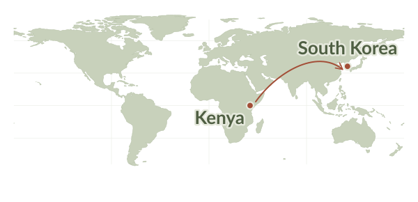

EDUCATION · TECHNOLOGY · RELATIONS
Education, technology & the relations in between.
Seoul, South Korea임성희
Education
01 / Publications & reports
Select a title to explore the study, methods, and my contribution. Publication statuses reflect the CV of November 2026.
02 / Research in practice
Close attention to classrooms.
Room for different possibilities.
03 / Academic journey
Research & experience
Presentations & conversations
Awards & honors
04 / About me

WAYS I INQUIRE